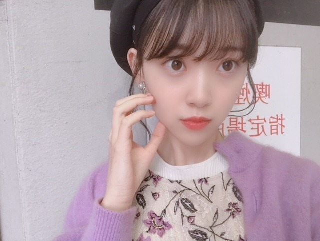

2018/1013Sat紫の魅
握手会ありがとうございました！
今日は
クラランスのハイライトパウダーと
エレガンスのピンクシャドウを
まぶたに塗りました
キラキラ、お気に入り☺︎

帽子はLAGUA GEMです
新ブランドでめちゃくちゃ可愛くて
赤のニットも買っちゃいました！
紫ニットはSNIDEL
未央奈ポーズ☺︎


久しぶりにメンバーとも会えて
話して笑って、癒されました！すき！
握手会に来てくださった
ファンの皆さんも映画の話とか
たくさんしてくれて、
漫画観たよーとか
頑張ってねーとか。
嬉しかったです
頑張らなきゃ！
ありがとうございます！
そして
4人に1人くらいの割合で女の子が
来てくれてびっくり&嬉しかったです
洋服やコスメの話もたくさんしたいな☺︎☺︎
もちろん男の人も嬉しいですよ
いろんなパーカーがみれたしね！！
来週は生誕T着ますね☺︎
お揃いしましょう

楽屋は久しぶりにプリン会
らんぜまるには会った瞬間ハグ
好きすぎるヨ...
よーし！
明日からも頑張りましょう！
おやすみおな
2018/10/13 21:00
コメント(720)
はつみこと未央奈〜こんばんは〜 個握お疲れ様でした〜
個握お疲れ様でした〜 ただでさえ可愛い写真なのに未央奈ポーズ付きなんてもうズッキュン過ぎて最高です〜
ただでさえ可愛い写真なのに未央奈ポーズ付きなんてもうズッキュン過ぎて最高です〜
 それにプリン会の写真まで本当にありがとう〜嬉しいよ〜未央奈〜
それにプリン会の写真まで本当にありがとう〜嬉しいよ〜未央奈〜
 生誕Tシャツでお揃いで未央奈に逢いたいのに個握全敗ってどういうことなのよ〜
生誕Tシャツでお揃いで未央奈に逢いたいのに個握全敗ってどういうことなのよ〜
 まあ私の運が無さ過ぎるのが原因なんだけどね
まあ私の運が無さ過ぎるのが原因なんだけどね 私は無事に握手会を終えられるように祈って心で未央奈と繋がるだけだけどね〜
私は無事に握手会を終えられるように祈って心で未央奈と繋がるだけだけどね〜 せめてそうやって未央奈と繋がってたい私を引かずにお許し頂けると助かります〜未央奈〜撮影にモデルに２２枚目シングルの活動と毎日多忙だと思うけど身体に気を付けて無理のし過ぎだけには注意して頑張ってね〜
せめてそうやって未央奈と繋がってたい私を引かずにお許し頂けると助かります〜未央奈〜撮影にモデルに２２枚目シングルの活動と毎日多忙だと思うけど身体に気を付けて無理のし過ぎだけには注意して頑張ってね〜
 ず〜っと応援してるからね〜未央奈〜大好き〜
ず〜っと応援してるからね〜未央奈〜大好き〜 お休みなさい〜
お休みなさい〜
未央奈～こんばんは！
ぽてとです！
握手会お疲れ様！
コーデ秋らしさがあって可愛い♪
プリン会の画像めっちゃ好きやわ(^^)
じゃあまたね♪
ぽてとです！
握手会お疲れ様！
コーデ秋らしさがあって可愛い♪
プリン会の画像めっちゃ好きやわ(^^)
じゃあまたね♪
ブログ更新ありがとうございます！！
いつも癒されてます
紫めっちゃ似合ってて可愛いです！
誕生日もうすぐですね！
応援してます！お体には気をつけてくださいね
いつも癒されてます
紫めっちゃ似合ってて可愛いです！
誕生日もうすぐですね！
応援してます！お体には気をつけてくださいね
堀ちゃんブログ更新ありがとう！
握手会お疲れ様でした。ゆっくり休んでね。
握手会お疲れ様でした。ゆっくり休んでね。
握手会お疲れ様
映画の撮影などがあって忙しいと思いますので体調管理には気をつけて下さい
ブログ更新ありがとう(今更)
映画の撮影などがあって忙しいと思いますので体調管理には気をつけて下さい
ブログ更新ありがとう(今更)
未央奈ブログ更新ありがとう！
未央奈ポーズかわいい！
そして今日の個握お疲れ様。
5部しか行けなかったけど未央奈に会えて嬉しかったよ。
今日も未央奈がおしゃれで可愛すぎた。
来週も行くので楽しみにしてます。
未央奈ポーズかわいい！
そして今日の個握お疲れ様。
5部しか行けなかったけど未央奈に会えて嬉しかったよ。
今日も未央奈がおしゃれで可愛すぎた。
来週も行くので楽しみにしてます。
未央奈、握手会ありがとう！
今日もお話できてすごく楽しかった♡
ピンクのカーディガン褒めてくれてありがとう♡
2部の服装が似てて、
双子コーデっぽくなってて嬉しかったなあ( ˙˘˙)✨
今日は時間が足りなくて伝えられなかったんだけど、
arの未央奈が載ってるメイクページが
好きすぎて何度も見てるの！
今日のメイクもすごく可愛かった～♫
クラランスのハイライトパウダーと
エレガンスのピンクシャドウも気になる！
調べてみるね〜( •̀ω•́ )
今日、未央奈と話して元気出たから
月曜日からまた仕事頑張るね！
未央奈が体調崩さず、
楽しくお仕事できるように祈ってます。
映画もすごく楽しみにしてる～♫♡
それでは、またね。
おやすみおな♡
紫色素敵ですね。
もうすぐ誕生日ですね。
幸せな日が訪れますように。
もうすぐ誕生日ですね。
幸せな日が訪れますように。
未央奈♪ヽ(´▽｀)/
握手会お疲れ様です
来週の握手会生誕Tシャツ
楽しみにしてるね
何部に着るのかな？
５部だと嬉しいかな(笑)
またコメントするね
SONYでした
握手会行きたかったよ！❗(._.)
握手会お疲れ様です
来週の握手会生誕Tシャツ
楽しみにしてるね
何部に着るのかな？
５部だと嬉しいかな(笑)
またコメントするね
SONYでした
握手会行きたかったよ！❗(._.)
ブログありがとう
そして、個握に映画撮影とお疲れ様です。自分もそんな忙しい環境の中笑顔で、ポジティブでいられる堀ちゃんを見習いたい！そして来週堀ちゃんとの個握を楽しみにお仕事頑張りますよ！
おやすみおな
そして、個握に映画撮影とお疲れ様です。自分もそんな忙しい環境の中笑顔で、ポジティブでいられる堀ちゃんを見習いたい！そして来週堀ちゃんとの個握を楽しみにお仕事頑張りますよ！
おやすみおな
更新ありがとう！
お疲れ様でした！
それらの服は未央奈に合ってた、
とても可愛いと思う
いつも頑張ってねそして、
お体に気を付けてね
おやすみ
ずっと大好き
お疲れ様でした！
それらの服は未央奈に合ってた、
とても可愛いと思う
いつも頑張ってねそして、
お体に気を付けてね
おやすみ
ずっと大好き
みおな、こんばんは。更新ありがとう！ 握手会お疲れ様です。撮影も頑張って下さい。もうすぐ誕生日ですね！ では、毎日みおなに良いこと沢山ありますように！ おやすみおな！！
今日は握手会ありがとうございました〜
映画がんばってね！
映画がんばってね！
みおなちゃんブログ更新ありがとう！
相変わらず顔面偏差値たかすぎで写真だけでもなんか眩しいですそして透明感半端ないですかわいすぎです、、 ♡
個握お金なくて応募できないからためて全握は絶対いくね！！
女子力のあるお話しをみおなちゃんとしたいです、、
あと映画がんばってね絶対みます☺︎
相変わらず顔面偏差値たかすぎで写真だけでもなんか眩しいですそして透明感半端ないですかわいすぎです、、 ♡
個握お金なくて応募できないからためて全握は絶対いくね！！
女子力のあるお話しをみおなちゃんとしたいです、、
あと映画がんばってね絶対みます☺︎
ちょっと早いけど、誕生日おめでとう
ステキな1年にしてね！
ステキな1年にしてね！
耳をすませばで好きなシーンは、
「違う！お前なんかじゃない！」って図書館で言っちゃうシーン（笑）
今日はお疲れ様！
これからも応援してます！
「違う！お前なんかじゃない！」って図書館で言っちゃうシーン（笑）
今日はお疲れ様！
これからも応援してます！
未央奈お疲れ様！
おやすみおな
おやすみおな
更新ありがとう♡︎プリン会最高すぎ！！！
おやすみおな
おやすみおな
こんばんは。ブログ更新ありがとうございます。
個握お疲れ様でしたー。女の子の割合増えましたねー。女の子ファンはやっぱり可愛いもの好きなのか、それとも乃木坂46の楽曲がきっかけなのか、聞いてみたいです。
あとベレー帽可愛いですね！！なぜかは分かりませんが、ベレー帽といえば秋のイメージがあります。
ではまた。
個握お疲れ様でしたー。女の子の割合増えましたねー。女の子ファンはやっぱり可愛いもの好きなのか、それとも乃木坂46の楽曲がきっかけなのか、聞いてみたいです。
あとベレー帽可愛いですね！！なぜかは分かりませんが、ベレー帽といえば秋のイメージがあります。
ではまた。
プリン会よ永遠に
握手会お疲れ様でした
女の子からの支持率も高いんですね！
握手会行ってみたいです
女の子からの支持率も高いんですね！
握手会行ってみたいです
みおな
本当にみおなレーンの待機列がものすごい長さになってたよ。
これぞ長蛇の列。だったもん。
本当にみおなレーンの待機列がものすごい長さになってたよ。
これぞ長蛇の列。だったもん。
ブログ更新ありがとー
とうとう明日誕生日だねー
とうとう明日誕生日だねー
本当にお疲れ様！今日本当に元気もらったよ！
お疲れ様です。
どもメンバーも久しぶりにみんなに会うと安心感があると言ってるので、それだけ乃木坂という場所は温かく、団結力がすごいんだなとこういう時によく感じます。
みんなに会えて充電満タンで、体調には気を付けつつ撮影頑張ってください！
どもメンバーも久しぶりにみんなに会うと安心感があると言ってるので、それだけ乃木坂という場所は温かく、団結力がすごいんだなとこういう時によく感じます。
みんなに会えて充電満タンで、体調には気を付けつつ撮影頑張ってください！
握手会お疲れ様です。
身体に気をつけて頑張って下さい。
身体に気をつけて頑張って下さい。
みおな更新ありがと！
大好き！！
大好き！！
未央奈～ こんにちは
個握おつかれさまでした。プリン会の写真も最高ですね。
久しぶりにメンバーといっしょだったということで、ホッとしている様子が伝わってきました。
この前のレコメンで元気そうな声を聞き、安心しましたが、思わぬところから「もみじ饅頭」事件が大反響になってしまいましたね。
それにしても、連日「映画の撮影」ということで。メンバーとも離れ、大変な毎日のようですね。もちろん、映画の完成楽しみにしていますよ。
というわけで、先週の名古屋での全握・ミニライブ、準地元というのに、不参加ということで、ホント残念でした。３年前の１２月は体調不良で参加できず悔しい思いをしたことを思い出しました。今回は事前に知らせてもらったので、１２月の大阪にしようかなとも思いましたが、若さまのこと考えて、そのまま未央奈のいない名古屋に参戦しました。ゴメンナサイ。
あっ、そうそう、「日経エンタテイメント」、セブン特約で与田ちゃんとのクリアファイル付きいただきました。A４サイズが入る上に、何より最高の写真。それに「目標高く前に進み続けるのでついて来て下さい」というサイン付き。ありがとうございました。思わず「ハイ!」と返事しましたよ。
個握おつかれさまでした。プリン会の写真も最高ですね。
久しぶりにメンバーといっしょだったということで、ホッとしている様子が伝わってきました。
この前のレコメンで元気そうな声を聞き、安心しましたが、思わぬところから「もみじ饅頭」事件が大反響になってしまいましたね。
それにしても、連日「映画の撮影」ということで。メンバーとも離れ、大変な毎日のようですね。もちろん、映画の完成楽しみにしていますよ。
というわけで、先週の名古屋での全握・ミニライブ、準地元というのに、不参加ということで、ホント残念でした。３年前の１２月は体調不良で参加できず悔しい思いをしたことを思い出しました。今回は事前に知らせてもらったので、１２月の大阪にしようかなとも思いましたが、若さまのこと考えて、そのまま未央奈のいない名古屋に参戦しました。ゴメンナサイ。
あっ、そうそう、「日経エンタテイメント」、セブン特約で与田ちゃんとのクリアファイル付きいただきました。A４サイズが入る上に、何より最高の写真。それに「目標高く前に進み続けるのでついて来て下さい」というサイン付き。ありがとうございました。思わず「ハイ!」と返事しましたよ。
未央奈ちゃん♪こんばんは＼(^o^)／
コメント遅くなってごめんね。
未央奈ポーズ可愛い(//∇//)
癒されて良かったね(*^^*)
明日も頑張ろうね(≧∇≦)
ゆっくり休んでね。
おやすみおな♪
未央奈ちゃん神推し
秀喜より！(≧▽≦)
コメント遅くなってごめんね。
未央奈ポーズ可愛い(//∇//)
癒されて良かったね(*^^*)
明日も頑張ろうね(≧∇≦)
ゆっくり休んでね。
おやすみおな♪
未央奈ちゃん神推し
秀喜より！(≧▽≦)
みおなちゃん握手会おつかれさまでしたみおなポーズ可愛いね早く疲れとれますように。
おやすみおな！
前回のレコメン、初見でした！面白くてめちゃ笑った（笑） パーカーオシャレ極めたい✌
前回のレコメン、初見でした！面白くてめちゃ笑った（笑） パーカーオシャレ極めたい✌
未央奈 こんばんは～‼
今日 美容院で偶然見たarに未央奈が載ってて本当に嬉しかった‼
☆メイク術もついでに
勉強させていただきました‼
可愛かったし，神秘的な感じが未央奈の魅力なんだよなぁ…‼って思った( ˶˙ᵕ˙˶ )
これからも応援しています
おやすみおな☆☆☆
今日 美容院で偶然見たarに未央奈が載ってて本当に嬉しかった‼
☆メイク術もついでに
勉強させていただきました‼
可愛かったし，神秘的な感じが未央奈の魅力なんだよなぁ…‼って思った( ˶˙ᵕ˙˶ )
これからも応援しています
おやすみおな☆☆☆
堀さん握手会お疲れ様でした！今回参加できませんでしたが次回楽しみにしています！紫すごく似合ってて可愛いですね。
お疲れ様です!
未央奈ちゃん、ひろっしーです！コメント投稿518回目です！
前回はブログ「ふとしたとき」にモバメの感想を書きました！
時間→「No.644 2018年10月12日 02:25」
ブログ更新ありがとうございます！
握手会お疲れ様でした！
早速1枚目から可愛い写真やぁ～！嬉しい～！
乃木坂カラーの紫ニットお似合いです！
赤ニット着た写真も今度見せて欲しいな～！
ベレー帽も秋っぽくて素敵！秋未央奈やぁ(笑)
と思ったら、2枚目と3枚目は未央奈ポーズ？
めっちゃ可愛いやん！癒されまくり～！
未央奈ちゃんもメンバーと会えて癒されたそうですね！楽屋もプリン会だし、未央奈ちゃんが癒されて僕も嬉しいです！
らんぜまるとのハグも見たかったヨ！
今日(13日)、セブンイレブンで22ndシングル「帰り道は遠回りしたくなる」の生写真付きを全Type予約してきました！めっちゃ楽しみ！
日付が変わり14日、21歳最後の日ですね！
とにかく全力で楽しんで、最高の形で22歳を迎えられると良いですね！め～で～(笑)
ここまで読んで頂きありがとうございました！
毎日お仕事お疲れ様です！体調にはくれぐれも気を付けて頑張ってくださいね！
おやすみおな～！
前回はブログ「ふとしたとき」にモバメの感想を書きました！
時間→「No.644 2018年10月12日 02:25」
ブログ更新ありがとうございます！
握手会お疲れ様でした！
早速1枚目から可愛い写真やぁ～！嬉しい～！
乃木坂カラーの紫ニットお似合いです！
赤ニット着た写真も今度見せて欲しいな～！
ベレー帽も秋っぽくて素敵！秋未央奈やぁ(笑)
と思ったら、2枚目と3枚目は未央奈ポーズ？
めっちゃ可愛いやん！癒されまくり～！
未央奈ちゃんもメンバーと会えて癒されたそうですね！楽屋もプリン会だし、未央奈ちゃんが癒されて僕も嬉しいです！
らんぜまるとのハグも見たかったヨ！
今日(13日)、セブンイレブンで22ndシングル「帰り道は遠回りしたくなる」の生写真付きを全Type予約してきました！めっちゃ楽しみ！
日付が変わり14日、21歳最後の日ですね！
とにかく全力で楽しんで、最高の形で22歳を迎えられると良いですね！め～で～(笑)
ここまで読んで頂きありがとうございました！
毎日お仕事お疲れ様です！体調にはくれぐれも気を付けて頑張ってくださいね！
おやすみおな～！
握手会ご苦労様でした(^_^;)まだまだ映画の撮影があると思いますけど、メンバーに久しぶりに会えたのはホントに良かったですね。
新たにエネルギーをメンバーやファンからもらって頑張りましょうね(^_^)
新たにエネルギーをメンバーやファンからもらって頑張りましょうね(^_^)
握手会お疲れ様です
最近の未央奈さん可愛さが限界突破してますやん
2月まで握手行けないのが辛いです･
らんぜまるとの写真もあったら載せてほしいな
撮影の間にこう握手会とか乃木坂のお仕事もあってすごく忙しそうで体調心配です
頑張ってください
最近の未央奈さん可愛さが限界突破してますやん
2月まで握手行けないのが辛いです･
らんぜまるとの写真もあったら載せてほしいな
撮影の間にこう握手会とか乃木坂のお仕事もあってすごく忙しそうで体調心配です
頑張ってください
プリン会がんばれ
未央奈チャン お疲れ様
うん
可愛いー
大好き
またね v
うん
可愛いー
大好き
またね v
堀さん、こんばんは。ブログ更新してくれて嬉しいです。
それ未央奈ポーズだったんですね。写真の２枚目３枚目のちょっとだけ寄る感じが可愛いです。紫ニットも可愛いですけど、肌白いし大きな瞳は輝いてるしで堀さんは鬼可愛いです。つまり鬼未央奈です。にしても”魅”ってすごい字ですね。一文字で鬼未央奈を思わせます。ニットで首元かゆくないかも鬼気になります。
撮影中に直接、励ましや待望する声が聞けるのってアイドルだけの特権かもしれませんね。僕も公開が楽しみで山戸監督の作品見直してます。特別であることと向き合いながら都会に出て行く女性主人公たちを見て、成田初がそういう役目かは分かりませんけど、監督の求めるそういう女性主人公像に堀さんが合致したのかななんて思いました。
ホットギミックが公開されてもっと女性ファンが増えたら嬉しいですね。撮影、頑張って最後まで全力で走り抜けてください。応援してます。
それ未央奈ポーズだったんですね。写真の２枚目３枚目のちょっとだけ寄る感じが可愛いです。紫ニットも可愛いですけど、肌白いし大きな瞳は輝いてるしで堀さんは鬼可愛いです。つまり鬼未央奈です。にしても”魅”ってすごい字ですね。一文字で鬼未央奈を思わせます。ニットで首元かゆくないかも鬼気になります。
撮影中に直接、励ましや待望する声が聞けるのってアイドルだけの特権かもしれませんね。僕も公開が楽しみで山戸監督の作品見直してます。特別であることと向き合いながら都会に出て行く女性主人公たちを見て、成田初がそういう役目かは分かりませんけど、監督の求めるそういう女性主人公像に堀さんが合致したのかななんて思いました。
ホットギミックが公開されてもっと女性ファンが増えたら嬉しいですね。撮影、頑張って最後まで全力で走り抜けてください。応援してます。
とっとっとー！
福岡の人じゃなくてごめんなさい笑笑
個握お疲れ様でした！
1部〜4部参加したよ〜
今日はやっと俺が乃木坂にハマったきっかけの未央奈のプク顔見れたので感無量です笑笑
なんでそんなに可愛いんや(´･_･`)
適当にいろんな方言使ってるけど茨城県民です笑笑
田舎者なのでいろんな方言に憧れちゃう
未央奈！好きやよ！
帰ったらゆっくりしてくださいね
これからも応援します！！
ばいばーい
福岡の人じゃなくてごめんなさい笑笑
個握お疲れ様でした！
1部〜4部参加したよ〜
今日はやっと俺が乃木坂にハマったきっかけの未央奈のプク顔見れたので感無量です笑笑
なんでそんなに可愛いんや(´･_･`)
適当にいろんな方言使ってるけど茨城県民です笑笑
田舎者なのでいろんな方言に憧れちゃう
未央奈！好きやよ！
帰ったらゆっくりしてくださいね
これからも応援します！！
ばいばーい
未央奈ちゃん握手会お疲れ様でした。
今回は残念ながら行けませんでした。仕事の都合上…て、言うか
取れなかったのもあります。( ;∀;)全握でも会えなかったし…
個握も無理でした…悲しい。でも、ブログ等で元気な姿が見れた
ので、いいかな～やっぱり良くないかも(笑)
相変わらず未央奈ちゃん可愛いよね～センスもピカイチだしね。
女の子が多いのも納得！
仲良し三人組のプリン会、見ててほっこりしますね～
やっぱり二期の、この三人組最強です！
撮影も順調のようですが、無理をしないで頑張って下さいね。
特に体調管理には気をつけてね。しっかりと睡眠を、とってね～
今回は残念ながら行けませんでした。仕事の都合上…て、言うか
取れなかったのもあります。( ;∀;)全握でも会えなかったし…
個握も無理でした…悲しい。でも、ブログ等で元気な姿が見れた
ので、いいかな～やっぱり良くないかも(笑)
相変わらず未央奈ちゃん可愛いよね～センスもピカイチだしね。
女の子が多いのも納得！
仲良し三人組のプリン会、見ててほっこりしますね～
やっぱり二期の、この三人組最強です！
撮影も順調のようですが、無理をしないで頑張って下さいね。
特に体調管理には気をつけてね。しっかりと睡眠を、とってね～
あっ！そうそう中部地区の和ラーカップ麺パッケージカラーが
未央奈ちゃんのサイリュムカラーのオレンジそして何よりも
応募の締切日が未央奈ちゃん誕生日！これって偶然なの！！
もうすぐ誕生日ですねぇ～なんかワクワクしますね～
未央奈ちゃんのサイリュムカラーのオレンジそして何よりも
応募の締切日が未央奈ちゃん誕生日！これって偶然なの！！
もうすぐ誕生日ですねぇ～なんかワクワクしますね～
ブログ更新ありがとう
未央ちゃん握手会お疲れさまでした
僕も未央ちゃんにいつも癒やされてます。
だんだん寒くなってきたから、風邪ひかないように体に気をつけてね
僕も未央ちゃんにいつも癒やされてます。
だんだん寒くなってきたから、風邪ひかないように体に気をつけてね
未央奈〜！今日の写真のリップどこの？
おやす未央奈（おやすみおな） (^_-)-☆
昨日の握手会は行けなかったけど来週行くよー！楽しみ！
生誕T着てく！
生誕T着てく！
みおなお疲れ様です！
ベレー帽被ってる女の人いたらなんか気になって見ちゃいます笑笑
いつか握手会行けたらみおなポーズしてって言おうかな〜…
最近は皆さん忙しいから、握手会ってメンバー同士が会えるって意味でも大事なんだろうなー この瞬間を無駄にはしない〜
最近は寒くなってきたので風邪ひかないようにね！
ベレー帽被ってる女の人いたらなんか気になって見ちゃいます笑笑
いつか握手会行けたらみおなポーズしてって言おうかな〜…
最近は皆さん忙しいから、握手会ってメンバー同士が会えるって意味でも大事なんだろうなー この瞬間を無駄にはしない〜
最近は寒くなってきたので風邪ひかないようにね！


個別握手会お疲れ様でした
今日は2部と3部で一回ずつお邪魔させて頂きました
生誕Tを着て行きましたが、着こなしてると言ってくれてとても嬉しかったです（カッコいいデザインだからインナーとして日常生活でも着ます）
去り際にウィンクまでしてくれて本当にありがとうございました
テレビや写真で見るより100万倍可愛かったです
堀ちゃんの着てた紫ベースの洋服もとても可愛いかったです（服の事も言いたかったけど時間が無くて言えなかった）
12月も行くので楽しみにしてます
映画の撮影も頑張って下さい
楽しい反面、仕事の負荷もすごいと思いますが応援してるので頑張って下さい
だけど今日はしっかり休んで下さい
自分もまた仕事を頑張ります
今日は楽しくて嬉しかったので本当にありがとう！